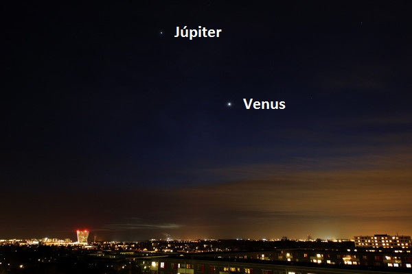
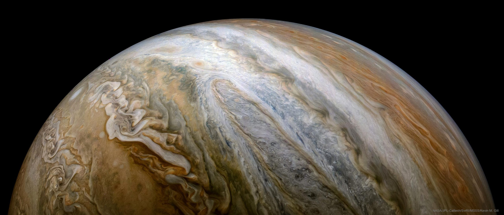
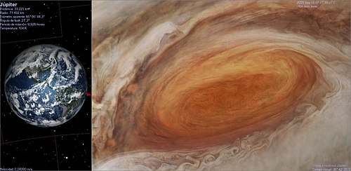
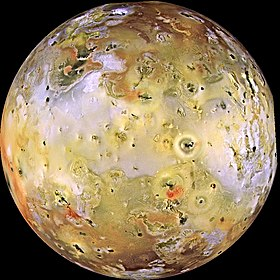
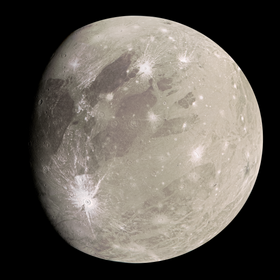

Júpiter es el planeta más grande del sistema solar y el quinto en orden de lejanía al Sol. Es un gigante gaseoso que forma parte de los denominados planetas exteriores. Recibe su nombre del dios romano Júpiter (Zeus en la mitología griega). Es uno de los objetos naturales más brillantes en un cielo nocturno despejado, superado solo por la Luna, Venus y algunas veces Marte.
Júpiter es el planeta con mayor masa del sistema solar: equivale a unas 2,48 veces la suma de las masas de todos los demás planetas juntos. Júpiter también posee la velocidad de rotación más rápida de los planetas del sistema solar: gira en poco menos de diez horas sobre su eje. Esta velocidad de rotación se deduce a partir de las medidas del campo magnético del planeta. La atmósfera se encuentra dividida en regiones con fuertes vientos zonales con periodos de rotación que van desde las 9h 50min 30s, en la zona ecuatorial, a las 9h 55min 40s en el resto del planeta.

Tomando como referencia la distancia al Sol, Júpiter es el quinto planeta del sistema solar. Su órbita se sitúa aproximadamente a 5UA, unos 750.000.000 de kilómetros del Sol.
2. Atmósfera
La atmósfera de Júpiter no presenta una frontera clara con el interior líquido del planeta; la transición se va produciendo de una manera gradual. Se compone en su mayoría de hidrógeno (87%) y helio (13%), además de contener metano, vapor de agua, amoníaco y sulfuro de hidrógeno, todas estas con menos del 0,1% de la composición de la atmósfera total.

La Gran Mancha Roja:
El científico inglés Robert Hooke observó en 1664 una gran formación meteorológica que podría ser la Gran Mancha Roja (conocida en inglés por las siglas GRS, del Great Red Stain). Varía mucho tanto de color como de intensidad. El tamaño actual de la Gran Mancha Roja es aproximadamente unas dos veces y media el de la Tierra. Meteorológicamente, la Gran Mancha Roja es un enorme anticiclón muy estable en el tiempo. Los vientos en la periferia del vórtice tienen una velocidad cercana a los 400km/h.
Satélites
1. Ío

Ío es el satélite galileano más cercano a Júpiter. Es el tercer satélite por su tamaño, tiene la más alta densidad entre todos los satélites y, en proporción, la menor cantidad de agua entre todos los objetos conocidos del sistema solar.
Fue descubierto por Galileo Galilei en 1610. Recibe su nombre de Ío, una de las muchas doncellas de las que Zeus se enamoró en la mitología griega, aunque inicialmente recibió el nombre de Júpiter I por ser el primer satélite de Júpiter según su cercanía al planeta.
Con un diámetro de 3600 kilómetros, es la tercera más grande de las lunas de Júpiter. En Ío hay planicies muy extensas y también cadenas montañosas, pero la ausencia de cráteres de impacto sugiere la juventud geológica de su superficie. Con más de 400 volcanes activos, es el objeto más activo geológicamente del sistema solar.
Esta actividad tan elevada se debe al calentamiento por marea, que es la respuesta a la disipación de enormes cantidades de energía proveniente de la fricción provocada en el interior del satélite.
2. Europa
ropa es el sexto satélite natural de Júpiter en orden creciente de distancia y el más pequeño de los cuatro satélites galileanos. Fue descubierto en 1610 por Galileo y nombrado por Europa, la madre del rey Minos de Creta y amante de Zeus.
Ligeramente más pequeño que la Luna, Europa está compuesto principalmente por silicatos, tiene una corteza de hielo de agua y un probable núcleo de hierro y níquel. Cuenta con una tenue atmósfera compuesta de oxígeno, entre otros gases. Su superficie está estriada por grietas y rayas, mientras que los cráteres son relativamente raros. Tiene la superficie más lisa de cualquier objeto conocido del sistema solar. Esta aparente juventud y suavidad ha dado lugar a la hipótesis de que existe un océano debajo de la superficie, el cual podría servir de morada para la vida.
3. Ganímedes

Ganímedes es el satélite natural más grande de Júpiter y del sistema solar,4 además de ser el único que tiene campo magnético. En orden de distancias al planeta, es el séptimo más cercano y el tercero de los galileanos, el primer grupo de objetos descubiertos que orbitan alrededor de un planeta.
Ganímedes se compone de silicatos y hielo de agua en cantidades aproximadamente iguales.11 Es un objeto diferenciado con un núcleo fundido rico en hierro y un océano interno que puede poseer más agua que todos los océanos de la Tierra juntos.
4. Calisto
Calisto es el tercer satélite más grande del sistema solar y el segundo del sistema joviano, después de Ganimedes. Tiene aproximadamente el 99% del diámetro del planeta Mercurio, pero solo un tercio de su masa. Es el cuarto satélite galileano en cuanto a distancia a Júpiter, con un radio orbital de 1.880.000 kilómetros.
Este satélite está compuesto aproximadamente por partes iguales de roca y hielo, con una densidad media de unos 1,83 g/cm³. Los componentes detectados mediante la firma espectral de la superficie incluyen hielo, dióxido de carbono, silicatos y compuestos orgánicos.